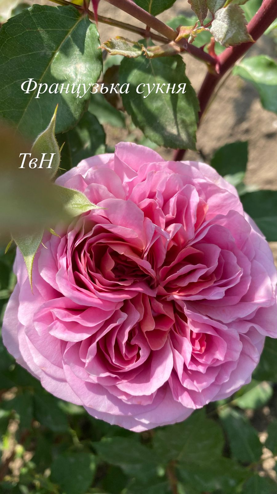
French Dress (Французьке плаття) — витончена японська троянда з густомахровими квітами ніжно-рожевого кольору з кремовими переливами. Бутони розкриваються в елегантні чашоподібні квіти з нотками старовинного шарму. Аромат легкий, солодкий. Кущ акуратний, до 1–1,2 м, з блискучим листям. Ідеальна для романтичних садових композицій.
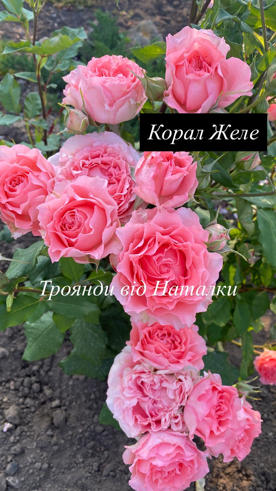
Coral Jelly (Корал Джеле) — яскрава троянда з квітами насиченого коралово-оранжевого кольору, які світлішають до ніжного персикового. Квіти густомахрові, округлої форми, з легким ароматом. Кущ компактний, до 80–100 см, рясно квітне протягом сезону. Ідеальна для посадки групами або в бордюрах.
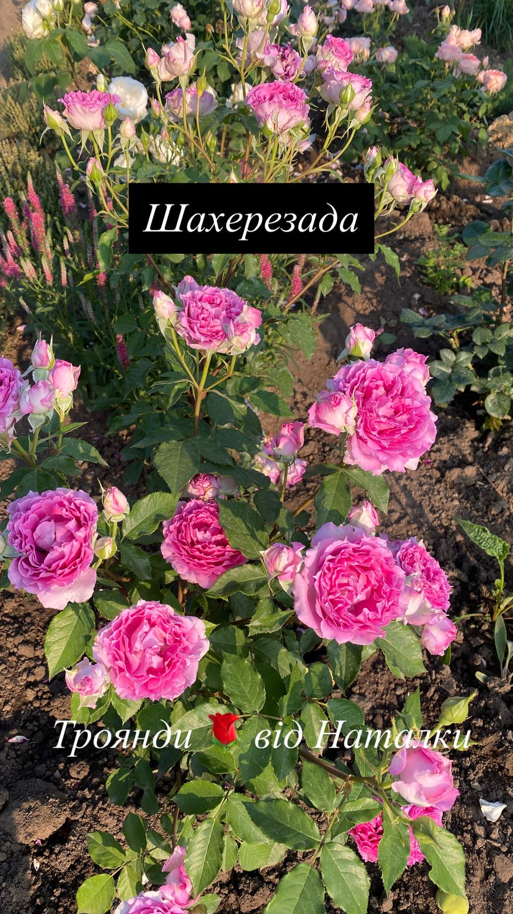
Scheherazade (Шахеризада) — незвичайна троянда з квітами пурпурово-малинового кольору з жовтуватими відтінками всередині та химерною формою пелюсток. Кожна квітка нагадує східну казку. Аромат середньої інтенсивності, солодкий. Кущ сильнорослий, розлогий, до 1,2–1,5 м, з хорошою стійкістю.
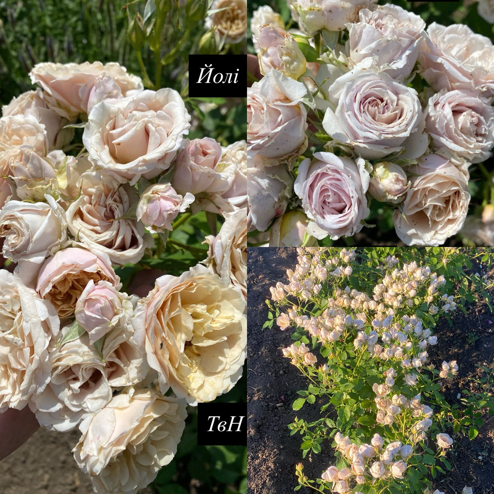
Yoli (Йолі) — ніжна японська троянда з квітами кольору шампань із легким рожевим тоном у центрі. Квіти густомахрові, розкриваються в об’ємні чаші з хвилястими пелюстками. Аромат свіжий, з ледь помітною фруктовістю. Кущ до 1 м, акуратний, добре виглядає в бордюрах і вазонах.
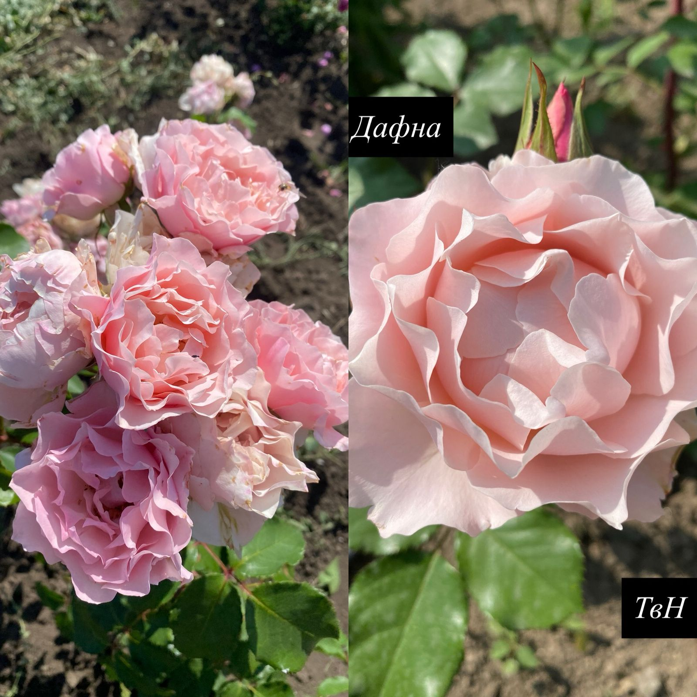
Daphne (Дафна) — одна з найвідоміших японських троянд з романтичними густомахровими квітами насичено-рожевого кольору. Пелюстки хвилясті, злегка загострені, створюють пишну форму. Аромат середній, квітковий. Кущ до 1,2 м, прямостоячий, з чудовою повторністю цвітіння.
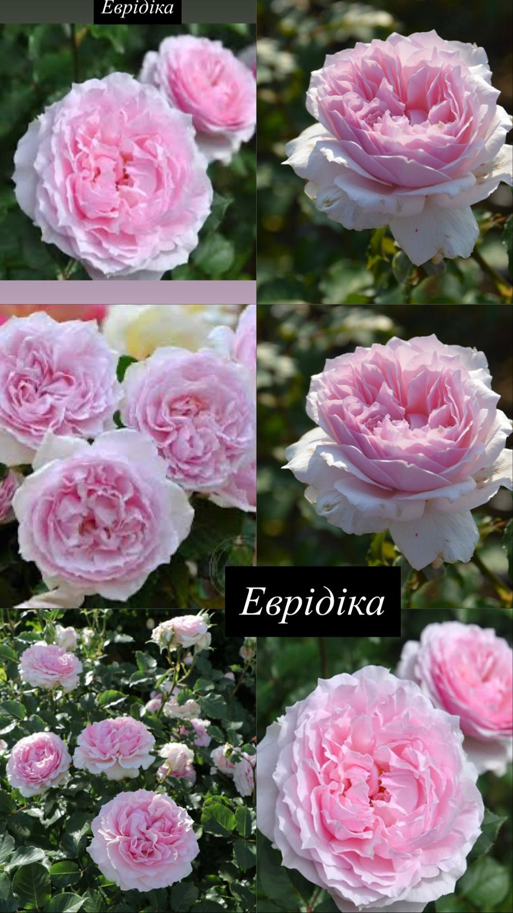
Eurydice (Евридіка) — розкішна троянда з великими квітами пастельно-рожевого кольору з легкими лавандовими нотками. Квіти зібрані у пишні кисті, мають чарівну чашоподібну форму. Аромат легкий, солодкий. Кущ до 1,2 м, компактний, з чудовою стійкістю до хвороб.
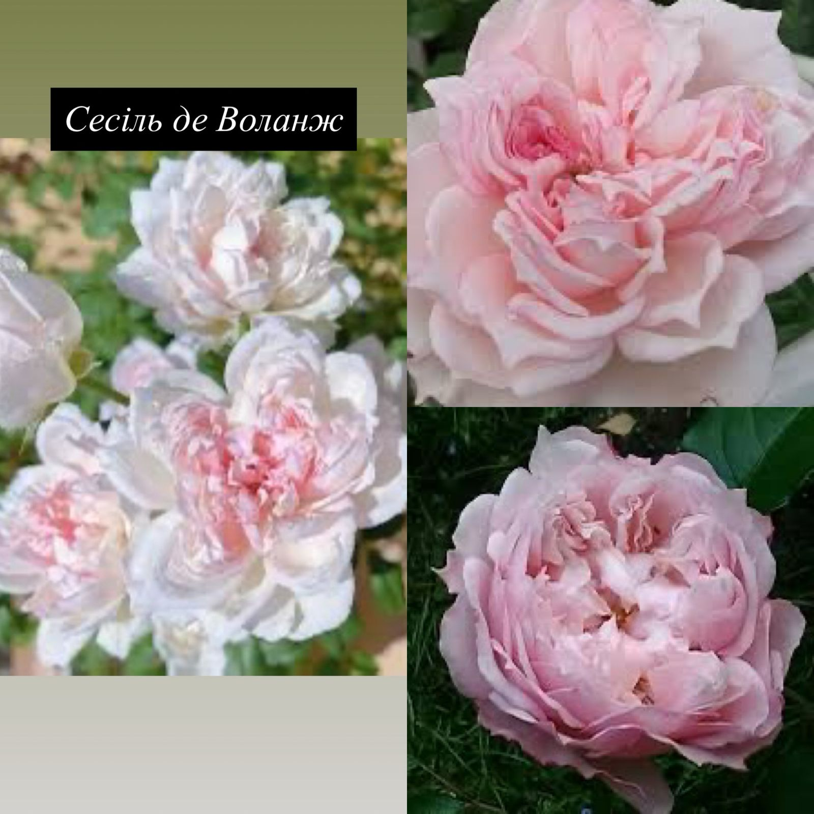
Cécile de Volanges (Сесиль де Воланж) — витончена троянда з квітами ніжного рожевого кольору, які з часом переходять у світло-персиковий. Квіти махрові, з хвилястими пелюстками. Аромат легкий, делікатний. Кущ прямостоячий, до 1 м, добре підходить для елегантних квітників.
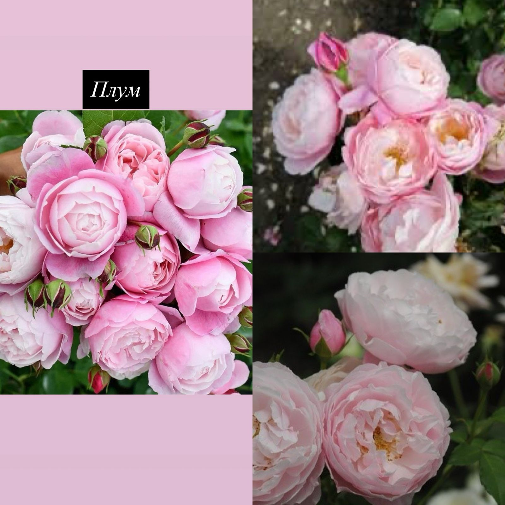
Plum (Плум) — вишукана японська троянда з квітами насиченого сливового відтінку з фіолетовим підтоном. Квітки середнього розміру, густомахрові, мають глибокий, солодкий аромат. Кущ до 1–1,2 м, з прямими пагонами і щільною зеленню. Ідеальна для контрастних посадок.
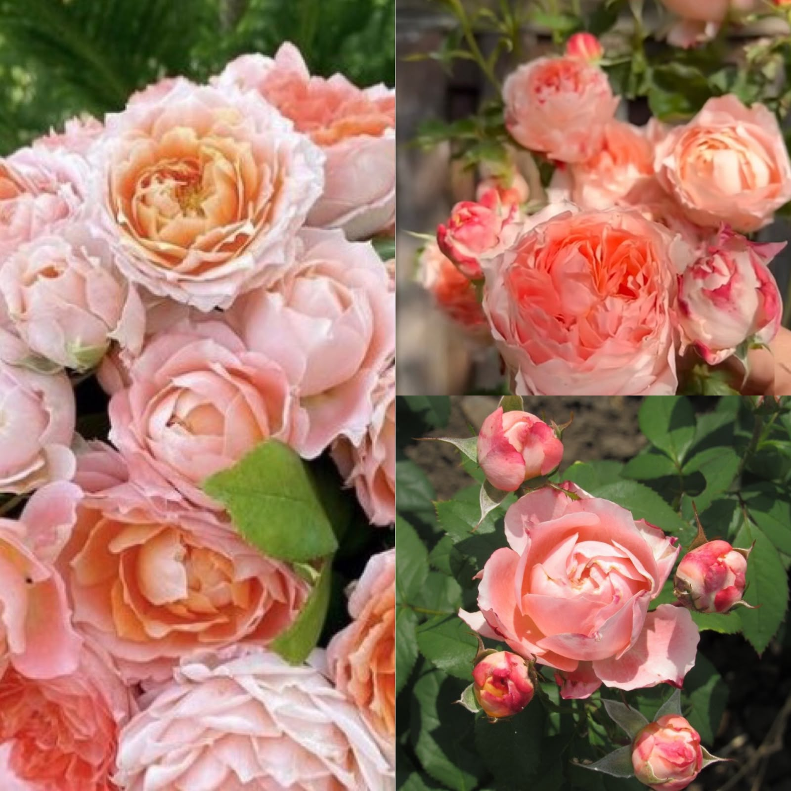
Princess Sakura (Принцеса Сакура) — це вишуканий сорт японської селекції, що відрізняється ніжним кремово-рожевим або персиковим відтінком. Квіти дуже густомахрові, налічують понад 80 пелюсток.Характеристики сортуКвіти: Помпоновидні, діаметром 8-10 см. Форма квітки часто нагадує класичне "чотири серця".Кущ: Висота зазвичай досягає 90-110 см, ширина — близько 60 см.Цвітіння: Рясне, повторне протягом усього сезону. Стійкість: Висока стійкість до захворювань та сонячного світла, морозостійкість — до -23°
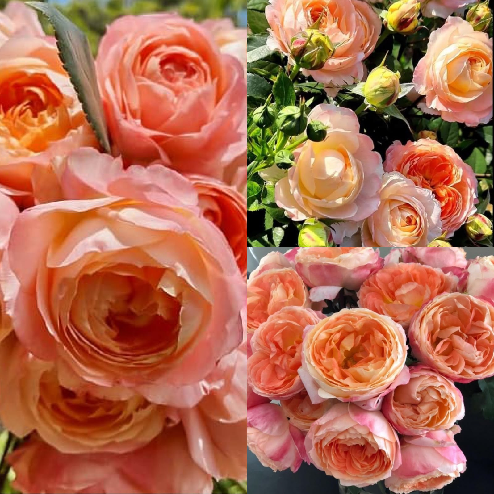
Princess Aiko (Принцеса Айко) — це вишуканий сорт японської селекції, що відрізняється ніжним Троянда «Принцеса Айко» (Princess Aiko) — це витончений японський сорт групи флорібунда з ексклюзивної колекції Wabara. Названа на честь спадкової японської принцеси, вона символізує елегантність та ніжність. Сорт славиться піоноподібною формою та високою стійкістю до хвороб.Основні характеристики:Колір: Насичено-персиковий, плавно переходить у кремові та світло-рожеві відтінки.Форма квітки: Густомахрова, піоноподібна (до 120 пелюсток). Розкривається приблизно на 80%, зберігаючи красиву чашоподібну форму.Розмір квітки: Діаметр становить 8–10 см.Аромат: Легкий та свіжий, іноді описується як фруктовий.Кущ: Висота зазвичай 80–120 см, ширина — 60–70 см.
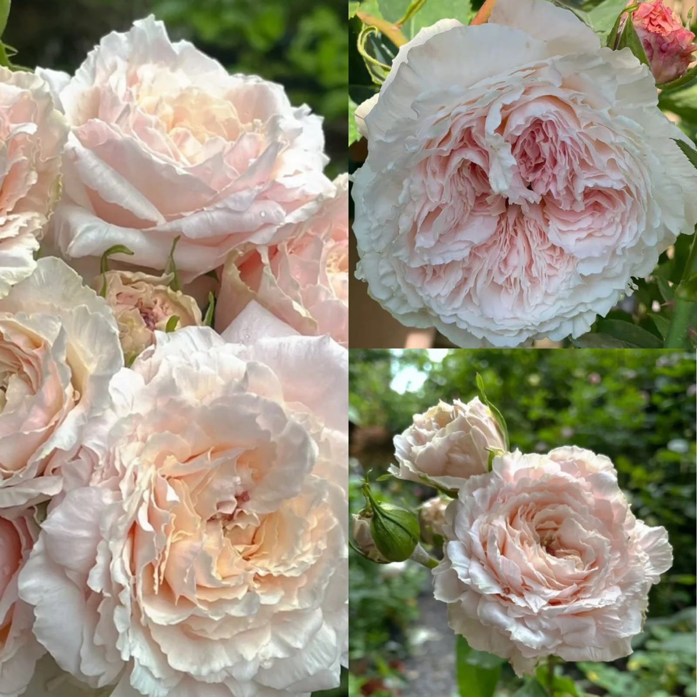
Троянда Цумугі (Tsumugi) — це вишуканий японський сорт (селекція Keiji Kunieda, 2018 рік), що належить до групи зрізкових троянд. Вона славиться блідо-рожевими або кремовими квітами з персиковим чи абрикосовим відтінком усередині, густомахровою формою і приємним ароматом із нотками лаванди.Основні характеристики:Квітка: Густомахрова (понад 100 пелюсток), велика (8–12 см у діаметрі), має старовинну чашоподібну форму.Кущ: Компактний, прямостоячий, виростає до 60–100 см заввишки та до 70 см завширшки.Цвітіння: Повторне та рясне протягом усього сезону, квітки зібрані в невеликі суцвіття.Стійкість: Добре переносить хвороби та морози. Відрізняється чудовою вазостійкістю — зрізані квіти зберігають свіжість до 10 днів.
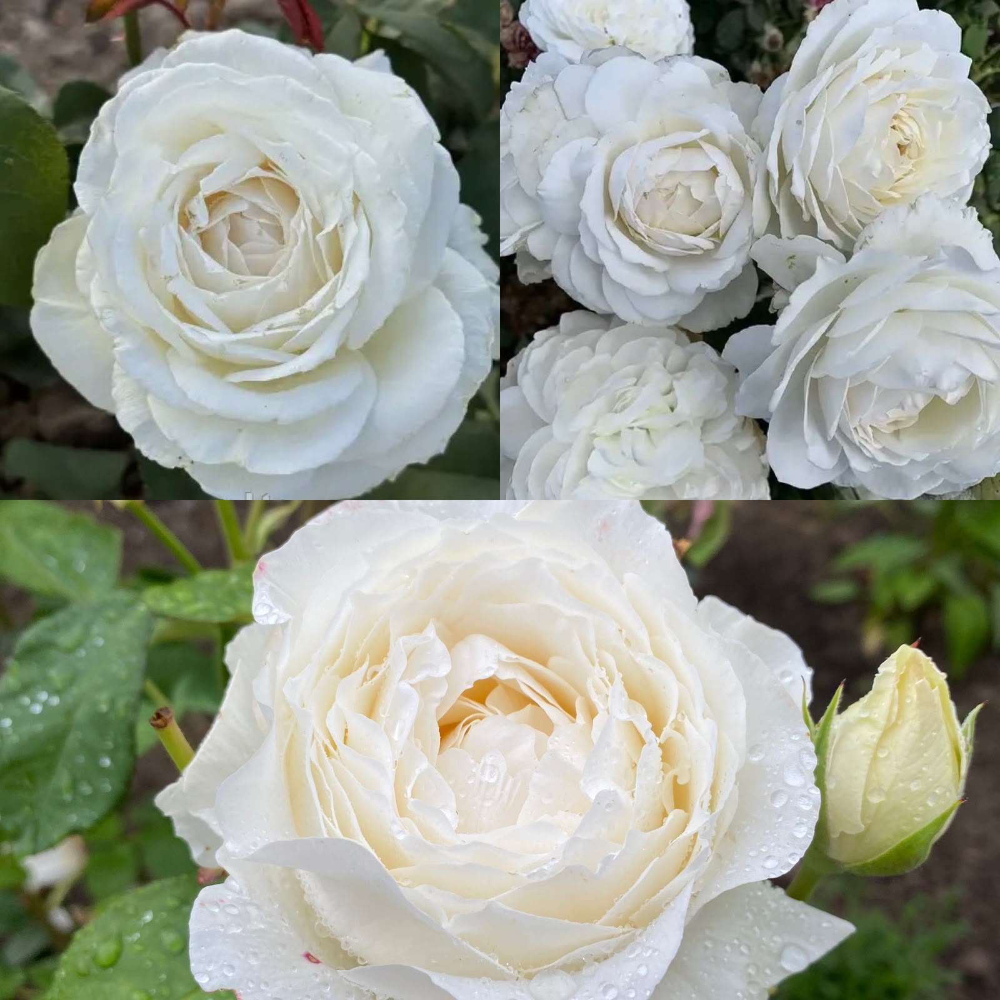
Троянда «Принцеса Міюкі» (Princess Miyuki) — це розкішний японський сорт шрабу (паркової троянди), виведений у 2016 році селекціонером Ватанабе (розплідник WABARA).Ключові характеристикиКвіти: Сніжно-білі або молочно-білі з легким кремовим відтінком у центрі. Квітка густомахрова (до 80 пелюсток), дуже велика — діаметром 12–14 см.Аромат: Сильний, багатогранний, з нотками мирри та солодки.Цвітіння: Повторне і рясне, бутони тримаються на кущі або у зрізі дуже довго.Кущ: Висотою 100–120 см, ширина — близько 60 см. Листя темно-зелене, щільне, з глянцевим блиском.Особливості вирощуванняСорт славиться хорошою стійкістю до хвороб. Троянда морозостійка (витримує до 23-24°C нижче нуля, що відповідає 6 зоні USDA), тому потребує стандартного укриття на зиму в регіонах з суворими морозами. Завдяки високим і міцним стеблам, вона ідеально підходить для створення преміум-букетів та весільної флористики